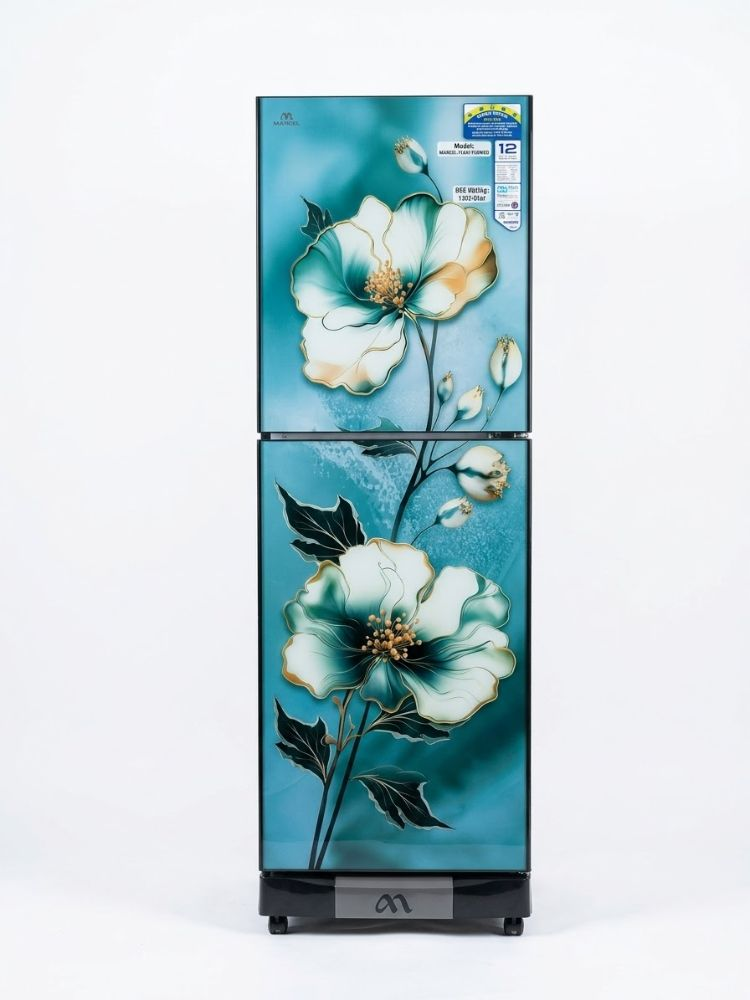
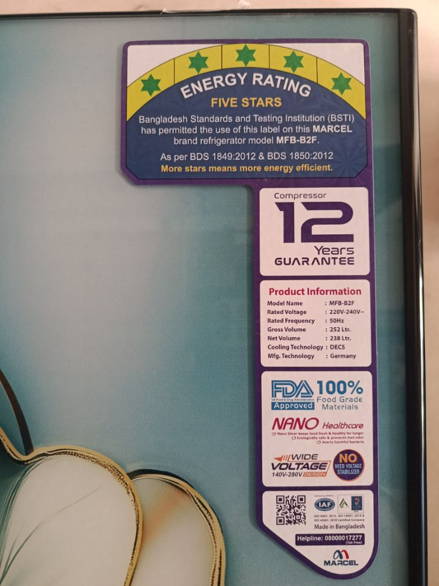

| Cooling Features | |
| Type Direct Cool | |
| Capacity | |
| Gross Volume 252 Ltr. | |
| Net Volume 238 Ltr. | |
| Net Weight 59 ± 2 Kg | |
| Gross Weight 66 ± 2 Kg | |
| Performance | |
| Climatic Type (SN, N, ST, T) N~ST | |
| Rated Voltage/ Hz 220 ~ 240/ 50 | |
| Compressor Input Power (Watt) V 06.01-124 | |
| V 07.01-109 | |
| V 07.02-109 | |
| V 07.03-109 | |
| V 08.01-127 | |
| Compressor Type RSCR | |
| Energy Rating N/A | |
| Cooling Effect Freezer Cabinet Less than -18℃ | |
| Refrigerator Cabinet 0℃ to +5℃ | |
| General Features | |
| Temperature Control (Electronic/ Mechanical) Mechanical | |
| Defrosting (Automatic/ Manual) | Manual |
| Handle (Recessed/ Grip) Recessed/Grip | |
| Lock Yes | |
| Refrigerant R600a | |
| Thermostat RoHS Certified | |
| Capillary Copper | |
| Polyurethane foam blowing agent Cyclopentene [Eco-friendly (100% CFC & | |
| HCFC Free) Green Technology] | |
| Recommended voltage stabilizer capacity V 06.01-Low Voltage(130~260V) | |
| For V 06.01- Wide Voltage Range (130Vac - 260Vac). Voltage stabilizer is not required. | |
| In case of voltages beyond this range, 1000VA is recommended. V 07.01,V 07.02,V 07.03-Low Voltage(140~260V) | |
| For V07.01, V 07.02,V 07.03 - Wide Voltage Range (140Vac - 260Vac). | |
| Voltage stabilizer is not required. In case of voltages beyond this range, 1000VA is recommended | |
| V 08.01-Low Voltage(150~260V) | |
| For V 08.01 - Wide Voltage Range (150Vac - 260Vac). | |
| Voltage stabilizer is not required. | |
| In case of voltages beyond this range, 1000VA is recommended. | |
| Refrigerator Compartment | |
| Shelf (Material/No.) Wire/2 | |
| Door Basket GPPS/4 | |
| Interior Lamp Yes | |
| Vegetable Crisper Yes | |
| Vegetable Crisper Cover Yes | |
| Egg Tray Yes | |
| Freezer Compartment | |
| Shelf (Material/ No.) Wire/3 | |
| Drawer HIPS/5 | |
| Net Dimensions | |
| Width/mm 555 mm | |
| Depth/mm 630 mm | |
| Height/mm 1720 mm | |
| Packaging Dimensions | |
| Width/mm 580 mm | |
| Depth/mm 645 mm | |
| Height/mm 1765 mm | |
| Loading Capacity- 40HQ/ 40Ft/ 20Ft 98/ 72/ 3 | |
MARCEL MFB-B2F 252L এর দাম বাংলাদেশে ৳ 42,690। MARCEL MFB-B2F 252L price in Bangladesh ৳ 42,690. অরগেট এন্টারপ্রাইজ-এ ক্যাশ ও কিস্তিতে পাওয়া যায়।